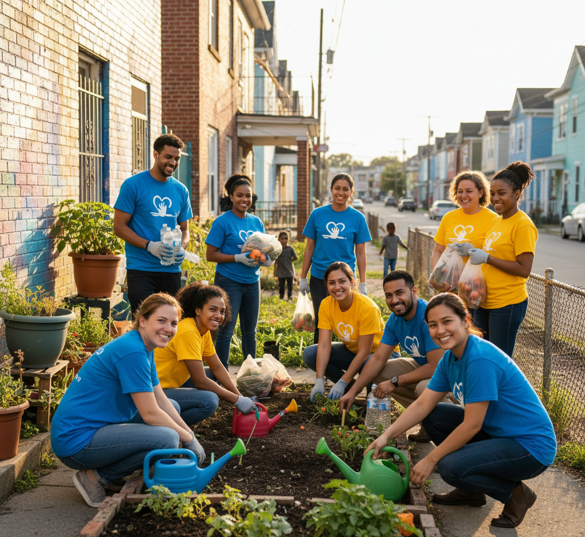
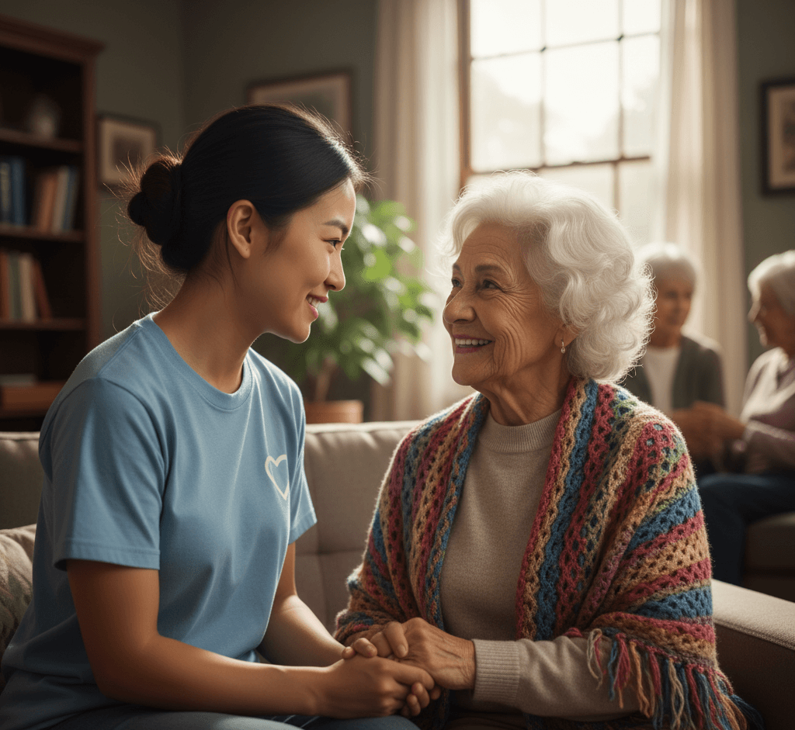
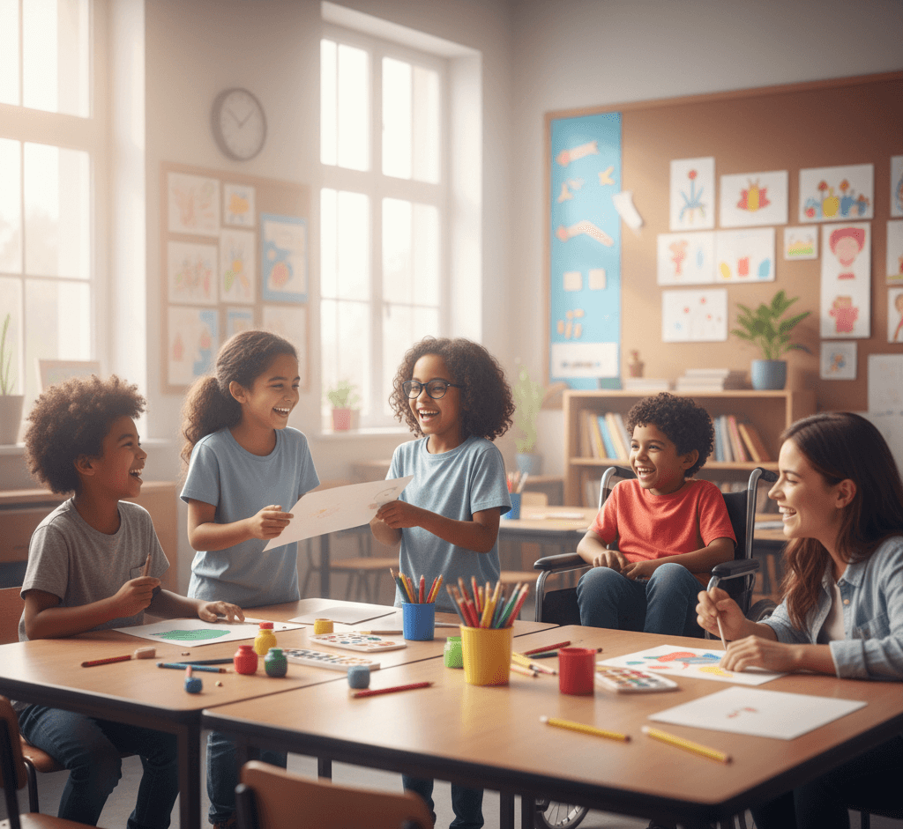

Bem-vindo(a) ao Amigos do Bem
Somos uma organização da sociedade civil dedicada a combater a desigualdade social. Atuamos com projetos focados em Educação, Inclusão Digital, Segurança Alimentar e Saúde Comunitária, garantindo oportunidades e dignidade a famílias em situação de vulnerabilidade.
Seja um Voluntário!



Educação
Aulas e reforço para jovens e adultos. Nosso objetivo é melhorar o futuro por meio da aprendizagem.
Alimentação
Doações e distribuição de cestas básicas para famílias em vulnerabilidade, com acompanhamento local.
Inclusão Digital
Oficinas, acesso à internet e apoio técnico para quem não tem contato com tecnologia.